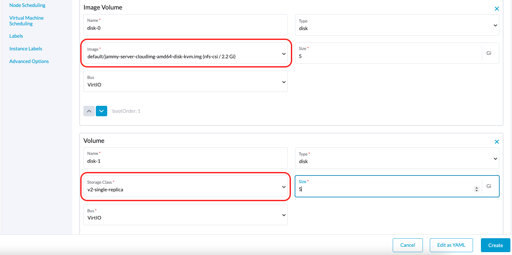
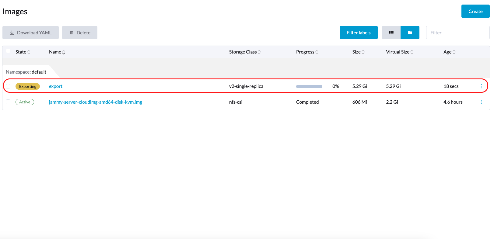

|
この文書は自動機械翻訳技術を使用して翻訳されています。 正確な翻訳を提供するように努めておりますが、翻訳された内容の完全性、正確性、信頼性については一切保証いたしません。 相違がある場合は、元の英語版 英語 が優先され、正式なテキストとなります。 |
サードパーティストレージのサポート
SUSE Virtualizationは外部 コンテナストレージインターフェース（CSI）ドライバーを使用して、ルートボリュームとデータボリュームのプロビジョニングをサポートします。この機能強化により、パフォーマンスの最適化や既存の内部ストレージソリューションとのシームレスな統合など、特定の要件を満たすドライバーを選択できるようになります。
SUSE Virtualizationチームは以下のCSIドライバーを検証しました：
-
Longhorn V2データエンジン：
driver.longhorn.io -
LVM：
lvm.driver.harvesterhci.io -
NFS:
nfs.csi.k8s.io -
Rook（RADOSブロックデバイス）：
rook-ceph.rbd.csi.ceph.com
これらの検証済みCSIドライバーには、以下の機能があります：
| ストレージソリューション | VMイメージ | VMルートディスク | VMデータディスク | ボリュームをVMイメージにエクスポート | VMテンプレートジェネレーター | VMライブマイグレーション | VM Snapshot | VMバックアップ |
|---|---|---|---|---|---|---|---|---|
Longhorn V2データエンジン |
✔ |
✔ |
✔ |
✔ |
✔ |
✔ |
✔ |
✔ |
LVM |
✔ |
✔ |
✔ |
✔ |
✔ |
✖ |
✔ |
✖ |
NFS |
✔ |
✔ |
✔ |
✔ |
✔ |
✔ |
✖ |
✖ |
Rook（RADOSブロックデバイス） |
✔ |
✔ |
✔ |
✔ |
✔ |
✔ |
✔ |
✖ |
|
サードパーティストレージのサポートは、外部コンテナストレージインターフェース（CSI）ドライバーを使用してルートボリュームとデータボリュームをプロビジョニングするサポートに相当します。これは、ストレージベンダーがSUSE Virtualizationでストレージアプライアンスを検証し、相互運用性を高めることができることを意味します。 SUSE Virtualizationと互換性があると認定されたエンタープライズグレードのストレージソリューションに関する情報は、 SUSE Customer Centerを通じてアクセスできるSUSE Rancher Primeのドキュメントに記載されています。 |
前提条件
SUSE Virtualizationが正常に機能するようにするには、次の機能をサポートするCSIドライバーを使用してください：
-
ボリュームの拡張（オンラインリサイズ）
-
スナップショットの作成（ボリュームおよび仮想マシンスナップショット）
-
クローン作成（ボリュームおよび仮想マシンクローン）
-
ライブマイグレーションのための読み書き多数（RWX）ボリュームの使用
SUSE Virtualizationクラスターを作成する
SUSE Virtualizationのオペレーティングシステムは不変の設計に従っており、再起動後にほとんどのOSファイルが事前に設定された状態に戻ります。したがって、サードパーティのCSIドライバー用にSUSE Virtualizationクラスターをインストールする前に、追加の設定を行う必要があるかもしれません。
一部のCSIドライバーは、ホスト上に追加の永続パスを必要とします。これらのパスをos.persistent_state_pathsに追加できます。
一部のCSIドライバーは、ホスト上に追加のソフトウェアパッケージを必要とします。これらのパッケージはos.after_install_chroot_commandsを使用してインストールできます。
|
SUSE Virtualizationをアップグレードすると、`after-install-chroot`ステージでOSに加えた変更が失われます。アップグレードする際に変更を永続化するためには、`after-upgrade-chroot`も設定する必要があります。 ランタイム永続変更を参照してから、SUSE Virtualizationをアップグレードする前に確認してください。 |
CSIドライバーをインストールしてください。
SUSE Virtualizationクラスターのインストール完了後、kubeconfigファイルへのアクセス方法を参照して、クラスターのkubeconfigを取得してください。
SUSE Virtualizationクラスターのkubeconfigを使用して、各CSIドライバーのインストール手順に従い、クラスターにサードパーティのCSIドライバーをインストールできます。CSIドライバーのドキュメントも参照して、SUSE Virtualizationクラスターに`StorageClass`と`VolumeSnapshotClass`を作成する必要があります。
SUSE Virtualizationクラスターを設定する
SUSE Virtualization の バックアップとスナップショット 機能を利用する前に、SUSE Virtualization csi-driver-config 設定を通じていくつかの基本的な構成を設定する必要があります。これらの設定を行うには、次の手順に従ってください：
-
SUSE Virtualization UI にログインし、次に 高度な → 設定 に移動します。
-
csi-driver-config を見つけて選択し、次に ⋮ → 設定を編集 を選択して構成オプションにアクセスします。
-
設定で*プロビジョナー*をサードパーティのCSIドライバーに設定します。
-
次に、ボリュームスナップショットクラス名 を構成します。この設定は、ボリュームスナップショットまたは VM スナップショットを作成するために使用される
VolumeSnapshotClassの名前を指します。

|
バックアップは現在、以下のものとのみ動作します：
他のストレージプロバイダーを使用している場合は、バックアップボリュームスナップショットクラス名 の構成をスキップできます。詳細については、 仮想マシンバックアップの互換性 を参照してください。 StorageClass プロビジョナーが CDI の デフォルトアクセスおよびボリュームモードを持つプロビジョナー のリストにない場合は、StorageClass に |
CSI ドライバーを使用する
CSIドライバーがインストールされ、SUSE Virtualizationクラスターが設定されると、ストレージ管理に関わるタスクで外部ストレージソリューションを使用できます。
仮想マシンイメージの作成
外部ストレージソリューションを使用して、仮想マシンイメージを保存および管理できます。
仮想マシンイメージをアップロードする際には、SUSE Virtualization UI (イメージ → 作成)を使用して、*ストレージ*タブで外部ストレージソリューションのStorageClassを選択する必要があります。次の例では、StorageClassは*nfs-csi*です。

SUSE Virtualizationは作成したイメージを外部ストレージソリューションに保存します。

仮想マシンの作成
仮想マシンは外部ストレージ内のルートおよびデータボリュームを使用できます。
仮想マシンを作成する際には、SUSE Virtualization UI (仮想マシン → 作成)を使用して、*ボリューム*タブで次の操作を行う必要があります：
-
外部ストレージソリューションに保存されている仮想マシンイメージを選択し、必要な設定を構成します。
-
データボリュームを追加します。

次の例では、ルートボリュームはNFSを使用して作成され、データボリュームはLonghorn V2データエンジンを使用して作成されます。

ボリュームの作成
外部ストレージソリューションでボリュームを作成できます。
ボリュームを作成する際には、SUSE Virtualization UI (ボリューム → 作成)を使用して、次の操作を行う必要があります：
-
ストレージクラス：対象のStorageClassを選択します（例：nfs-csi）。
-
ボリュームモード：対応するボリュームモードを選択します（例：ファイルシステム）。

詳細トピック
ストレージプロファイル
CDI APIを使用して、データボリュームの定義を簡素化するカスタム ストレージプロファイルを作成できます。ストレージプロファイルは、複数のデータボリュームが同じプロビジョナー設定を共有できるようにします。
以下はLVMストレージプロファイルの例です：
apiVersion: cdi.kubevirt.io/v1beta1
kind: StorageProfile
metadata:
name: lvm-node-1-striped
spec:
claimPropertySets:
- accessModes:
- ReadWriteOnce
volumeMode: Block
status:
claimPropertySets:
- accessModes:
- ReadWriteOnce
volumeMode: Block
cloneStrategy: snapshot
dataImportCronSourceFormat: pvc
provisioner: lvm.driver.harvesterhci.io
snapshotClass: lvm-snapshot
storageClass: lvm-node-1-stripedデフォルトの設定を上書きするフィールドを定義できます。詳細については、CDIドキュメントの ストレージプロファイルを参照してください。
|
ストレージプロファイルやCDIを直接変更しないでください。代わりに、SUSE VirtualizationコントローラーがCDIアノテーションを使用してストレージプロファイルの設定を同期し、永続化できるようにしてください。 |
制限
-
バックアップサポートは現在SUSE Storageボリュームに制限されています。SUSE Virtualizationは外部ストレージ内のボリュームのバックアップを作成できません。
-
CDIには、SUSE Virtualizationが接続されたPVCを仮想マシンイメージに変換するのを防ぐ制限があります。外部ストレージにボリュームをエクスポートする前に、PVCがワークロードに接続されていないことを確認してください。これにより、結果として得られるイメージが*エクスポート中*の状態でスタックするのを防ぎます。

NFS CSIドライバのデプロイメント
|
NFSサーバーがすでにインストールされ、実行中である場合にのみ、NFS CSIドライバをデプロイできます。
サーバーがすでに実行中の場合は、 |
-
csi-driver-nfsHelmチャートを使用してドライバをインストールします。$ helm repo add csi-driver-nfs https://raw.githubusercontent.com/kubernetes-csi/csi-driver-nfs/master/charts $ helm install csi-driver-nfs csi-driver-nfs/csi-driver-nfs --namespace kube-system --version v4.10.0 -
NFS用のStorageClassを作成します。
パラメータに関する詳細は、Kubernetes NFS CSIドライバのドキュメントの ドライバパラメータ：ストレージクラスの使用を参照してください。
apiVersion: storage.k8s.io/v1 kind: StorageClass metadata: name: nfs-csi provisioner: nfs.csi.k8s.io parameters: server: <your-nfs-server-ip> share: <your-nfs-share> # csi.storage.k8s.io/provisioner-secret is only needed for providing mountOptions in DeleteVolume # csi.storage.k8s.io/provisioner-secret-name: "mount-options" # csi.storage.k8s.io/provisioner-secret-namespace: "default" reclaimPolicy: Delete volumeBindingMode: Immediate allowVolumeExpansion: true mountOptions: - nfsvers=4.2作成後、StorageClassを使用して仮想マシンイメージ、ルートボリューム、およびデータボリュームを作成できます。
当バージョンの注意事項
1.無限の画像ダウンロードループ
画像のStorageClassがLVM CSIドライバーを使用している場合、画像ダウンロードプロセスが無限にループします。この問題は、CDIによって作成され、画像データを一時的に保存するために使用されるスクラッチボリュームに関連しています。この問題があなたの環境に存在する場合、`importer-prime-xxx`ポッドログに次のエラーメッセージが表示されることがあります：
E0418 01:59:51.843459 1 util.go:98] Unable to write file from dataReader: write /scratch/tmpimage: no space left on device
E0418 01:59:51.861235 1 data-processor.go:243] write /scratch/tmpimage: no space left on device
unable to write to file
kubevirt.io/containerized-data-importer/pkg/importer.streamDataToFile
/home/abuild/rpmbuild/BUILD/go/src/kubevirt.io/containerized-data-importer/pkg/importer/util.go:101
kubevirt.io/containerized-data-importer/pkg/importer.(*HTTPDataSource).Transfer
/home/abuild/rpmbuild/BUILD/go/src/kubevirt.io/containerized-data-importer/pkg/importer/http-datasource.go:162
kubevirt.io/containerized-data-importer/pkg/importer.(*DataProcessor).initDefaultPhases.func2
/home/abuild/rpmbuild/BUILD/go/src/kubevirt.io/containerized-data-importer/pkg/importer/data-processor.go:173
kubevirt.io/containerized-data-importer/pkg/importer.(*DataProcessor).ProcessDataWithPause
/home/abuild/rpmbuild/BUILD/go/src/kubevirt.io/containerized-data-importer/pkg/importer/data-processor.go:240
kubevirt.io/containerized-data-importer/pkg/importer.(*DataProcessor).ProcessData
/home/abuild/rpmbuild/BUILD/go/src/kubevirt.io/containerized-data-importer/pkg/importer/data-processor.go:149
main.handleImport
/home/abuild/rpmbuild/BUILD/go/src/kubevirt.io/containerized-data-importer/cmd/cdi-importer/importer.go:188
main.main
/home/abuild/rpmbuild/BUILD/go/src/kubevirt.io/containerized-data-importer/cmd/cdi-importer/importer.go:148
runtime.mainメッセージ`no space left on device`は、スクラッチボリュームを使用して作成されたファイルシステムが画像データを保存するには不十分であることを示しています。CDIは、ターゲットボリュームのサイズに基づいてスクラッチボリュームを作成しますが、ファイルシステムのオーバーヘッドにより一部のスペースが失われます。デフォルトのオーバーヘッド値は`0.055`（5.5%に相当）であり、ほとんどの場合において十分です。ただし、画像サイズが1GB未満で、その仮想サイズが画像サイズに非常に近い場合、デフォルトのオーバーヘッドは不十分である可能性があります。
回避策は、次のコマンドを使用してファイルシステムのオーバーヘッドを20%に増加させることです：
# kubectl patch cdi cdi --type=merge -p '{"spec":{"config":{"filesystemOverhead":{"global":"0.2"}}}}'ファイルシステムのオーバーヘッドが増加すると、画像がダウンロードされるはずです。
|
オーバーヘッド値を増加させても、画像PVCサイズには影響しません。画像がインポートされた後、スクラッチボリュームは削除されます。 |
2.マルチパスのサポート
`multipathd`サービスは、デフォルトでSUSE Virtualizationで無効になっています。ただし、一部のサードパーティ製CSIでは、サービスを有効にする必要があります。
SUSE Virtualizationをインストールした後、各クラスターのノードにログインし、次のコマンドを実行することで`multipathd`を有効にして開始できます：
systemctl enable multipathd
systemctl start multipathdまた、各ホストの`/oem`ディレクトリにSUSE® Rancher Prime: OS Manager CloudInitファイルを作成することもできます（例えば、/oem/99-start-multipathd.yaml）次の内容で：
stages:
default:
- name: "start multipathd"
systemctl:
enable:
- multipathd
start:
- multipathdこの処理は、CloudInit CRDを使用してHarvesterクラスター全体で自動化できます。
apiVersion: node.harvesterhci.io/v1beta1
kind: CloudInit
metadata:
name: start-mutlitpathd
spec:
matchSelector:
harvesterhci.io/managed: "true"
filename: 99-start-mutlitpathd
contents: |
stages:
default:
- name: "start multipathd"
systemctl:
enable:
- multipathd
start:
- multipathd
paused: false